1과목: 유통경영
1. 상품의 수요를 예측하는 정량적 수요예측기법에 대한 설명으로 가장 옳지 않은 것은?
2. SWOT 분석에서 약점(weakness)에 해당하는 사례로 가장 옳지 않은 것은?
3. 기업의 사업 선정에 영향을 미치는 거시환경으로만 짝지어진 것은?
4. 직무성과 측정과 관련된 각종 기준에 대한 설명으로 옳지 않은 것은?
5. 아래 글상자의 사례가 나타내는 본원적 경쟁전략으로 가장 옳은 것은?
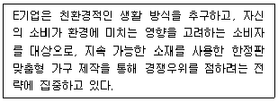
6. 소매업체들이 추구하는 성장전략 중 시장침투 전략에 대한 내용으로 가장 옳지 않은 것은?
7. 기업의 사회적 책임에 대한 설명으로 가장 옳지 않은 것은?
8. 리더십에 대한 상황론적 접근방법 중 리더-구성원 교환(LMX) 모델에 대한 설명으로 가장 옳은 것은?
9. 인사고과에서 발생할 수 있는 각종 오류에 대한 설명 중 에서 가장 옳지 않은 것은?
10. 조직구성원이 가지고 있는 공유된 의미 체계인 조직문화에 대한 설명으로 옳지 않은 것은?
11. 종업원의 업무의욕을 향상시키기 위한 각종 동기 이론들 중에서 동기가 부여되는 과정에 초점을 맞춘 이론으로만 바르게 나열한 것은?
12. 중요성, 난이도, 위험도 등을 기준으로 다른 직무 대비 특정 직무의 상대적 가치를 기술한 문서로서 옳은 것은?
13. 연봉제의 장점으로 옳지 않은 것은?
14. 아래 글상자의 자료를 토대로 재무상태표 차변의 총합을 바르게 계산한 것은?
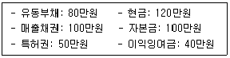
15. 아래 글상자의 자료를 이용하여 제품의 공헌이익률을 계산한 것으로 가장 옳은 것은?
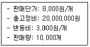
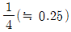
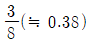
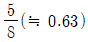
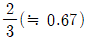
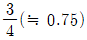
16. 투자에서 발생하는 미래 현금흐름의 현재가치를 계산할 때 적용하는 비율인 할인율로서 가장 옳지 않은 것은?
17. 소매점의 다양한 성과 측정자료를 투입(input), 산출(output), 생산성(output/input)으로 크게 유형을 나눌 경우, 다음 중 점포운영의 산출(output) 지표로 가장 옳은 것은?
18. 백화점 A는 기존 고객들의 판매 요구가 많은 새로운 와인들을 공급받을 목적으로 와인양조장(winery) B를 인수했다. 백화점 A의 이 성장전략에 대한 기술로서 가장 옳지 않은 것은?
19. 유통산업발전법(법률 제19117호, 2022.12.27., 타법개정)상의 유통관리사에 대한 내용으로 옳지 않은 것은?
20. 독점규제 및 공정거래에 관한 법률(공정거래법)(법률 제20239호, 2024.2.6., 일부개정)에서 정하는 시장지배적 사업자가 해서는 안 되는 남용행위로 옳지 않은 것은?
2과목: 물류경영
21. 4차 산업혁명 시대의 물류와 환경변화에 대한 설명으로 가장 옳지 않은 것은?
22. 물류비 관리요건 설명으로 옳지 않은 것은?
23. 아래 글상자에서 효율적 물류관리가 국민경제에 기여하는 효과로 옳은 것을 모두 고르면?
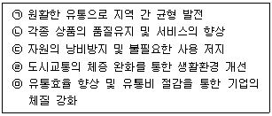
24. 아래 글상자의 물류비 단계별 관리 순서를 바르게 나열한 것은?
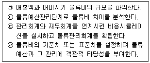
25. 아래 글상자 자료는 A사의 세목별 물류비이다. 경비에 해당되는 내용만을 옳게 나열한 것을 모두 고르면?
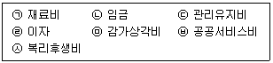
26. 하역비 부담조건 중 선적은 화주의 책임과 비용으로, 양륙은 선주의 책임과 비용으로 이루어지는 방식으로 옳은 것은?
27. 복합운송의 특징에 대한 설명으로 옳지 않은 것은?
28. 사업부형 물류관리 조직에 대한 설명으로 가장 옳지 않은 것은?
29. 화주기업이 자사 물류부문을 분리, 독립시킨 분사경영의 한 형태인 물류자회사제도의 장점 중 자회사 입장에서의 장점에 대한 설명으로 가장 옳지 않은 것은?
30. 아래 글상자의 괄호 안에 들어갈 부정기선 운임으로 가장 옳은 것은?
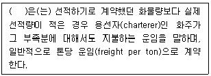
31. 공급체인원가계산(SCC)과 관련된 관리기법으로 가장 거리가 먼 것은?
32. 항공운송에 대한 설명으로 가장 옳지 않은 것은?
33. 아래 글상자에서 설명하는 IT 기술을 활용한 운송관리시스템으로 옳은 것은?
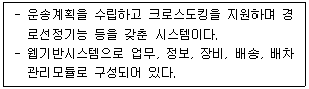
34. 합리적인 하역활동을 위한 원칙으로 가장 옳은 것은?
35. 소매상이 의사결정 시 고려하는 내용으로 옳지 않은 것은?
36. 창고의 종류에 대한 설명으로 가장 옳지 않은 것은?
37. 효과적이고 효율적인 물류센터 정보시스템의 요건 설명으로 옳지 않은 것은?
38. 도매상을 상인도매상과 수수료도매상으로 구분할 때 상인도매상에 대한 설명으로 옳은 것은?
39. 도소매 물류에서 고객서비스수준과 관련된 설명으로 옳지 않은 것은?
40. 팔레트 풀(pallet pool)의 장점으로 옳지 않은 것은?
3과목: 상권분석
41. 특정 지역시장의 매력도는 IRS와 MEP를 통해 평가할 수 있지만 그 지역의 경제적 기반(economic base)도 같이 평가하는 것이 바람직하다. 다음 중 IRS와 MEP 이외에 지역의 경제적 기반으로 평가하는 주요 요인으로 가장 옳지 않은 것은?
42. 동일한 상권 안에서 서로 경쟁하는 점포들이 분산하는 대신 집중하는 입지전략을 채택하는 이유를 설명하는 이론으로서 가장 옳은 것은?
43. 상권의 개략적 범위를 파악하기 위해 활용하는 상권구획모형의 일종인 티센다각형(Thiessen Polygon) 모형과 관련된 설명으로 가장 옳지 않은 것은?
44. 상권분석 방법 중에서 소비자의 위치를 공간상에 표시하여 기존 점포의 상권범위를 확인하고자 할 때 주로 사용되는 방법은?
45. 소매점포의 상권에 관한 설명으로 가장 옳지 않은 것은?
46. 상권분석 방법 중 애플바움(W. Applebaum)이 제안한 유추법에 대한 설명으로 가장 옳지 않은 것은?
47. 아래 글상자의 내용은 Huff 모형에서 각 지역(zone)에서의 예상 매출액을 구하는 공식이다. 괄호 안에 들어갈 내용으로 옳은 것은?
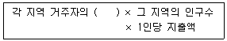
48. 건축용지 중 획지에 관한 설명으로 가장 옳지 않은 것은?
49. Huff 모형이나 MNL 모형과 같은 확률적 상권분석 방법에서 이용하는 점포선택 등확률선(isoprobability contours)을 통해 파악할 수 있는 내용으로 볼 수 없는 것은?
50. 국토의 계획 및 이용에 관한 법률 시행령(약칭: 국토계획법시행령)(대통령령 제34774호, 2024.7.30., 일부개정)에서 정하고 있는 용도지역 안에서의 건폐율 최대한도가 가장 높은 것은?
51. 매출과 밀접한 관련이 있는 입지영향인자인 가시성에 대한 설명으로 옳지 않은 것은?
52. 아래의 글상자가 설명하는 입지의 매력도를 평가하는 원칙으로 가장 옳은 것은?
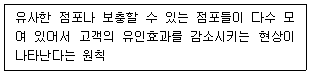
53. 소매점이 일정한 지역 안에 집중적으로 출점하는 다점포화를 추구하는 이유로 가장 옳지 않은 것은?
54. 업종 선정과 관련된 설명으로 가장 옳지 않은 것은?
55. 중심지체계에 의해 입지유형을 구분할 때 도심상권의 특징으로 가장 옳지 않은 것은?
56. 다양한 목적의 상권분석에 활용 가능성이 높은 Huff 모형과 MNL 모형에 대한 설명 중 옳지 않은 것은?
57. 건물을 신축하여 유통산업발전법(법률 제19117호, 2022.12.27., 타법개정)에서 정하는 '대규모점포'를 개설하려고 한다. 해당 법령에 따라 다음 인ㆍ허가 관련 업무의 이행이 필요하다고 할 때, 그에 대한 설명으로 가장 옳지 않은 것은?
58. 쇼핑센터를 구성하는 공간구성요소에 대한 설명으로 옳지 않은 것은?
59. 입점업체들 사이의 업종연관성을 의미하는 업종친화력이 가장 낮은 상가로서 옳은 것은?
60. “주상복합건물”, “15분 도시” 등 관심이 높아지고 있는 복합용도개발(mixed-use developments; MXDs) 입지의 특징으로서 가장 옳지 않은 것은?
4과목: 유통마케팅
61. 아래 글상자의 괄호 안에 들어갈 용어로 가장 옳은 것은?
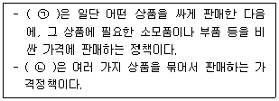
62. 효과적인 시장세분화의 요건 중 차별화 가능성(Differentiability)에 대한 설명으로 옳은 것은?
63. 아래 글상자의 사례가 제시하는 커뮤니케이션 예산수립방법으로 가장 옳은 것은?
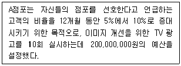
64. 아래 글상자의 괄호 안에 들어갈 용어를 순서대로 옳게 나열한 것은?
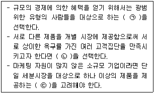
65. 데이브 맥클루어(Dave McClure)가 제시한 고객생애주기관리를 위한 AARRR지표 중 활성화(Activation)에 해당하는 활동 및 노력에 대한 설명으로 가장 옳은 것은?
66. 아래 글상자에서 설명하는 웹사이트의 디자인 요소로 가장 옳은 것은?
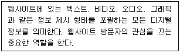
67. 아래 글상자에서 제시하는 내용을 토대로 가장 효과적인 전환율(CVR)을 보인 마케팅 채널로 옳은 것은?
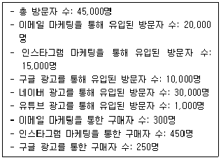
68. 커뮤니케이션을 통해 표적청중들로부터 원하는 반응을 얻기 위해서는 소비자들의 구매행동 단계를 잘 파악해야 한다. 촉진효과의 하이어라키 모형의 단계를 순차적으로 나열한 것으로 옳은 것은?
69. 오프라인 플랫폼 비즈니스와 비교했을 때, 모바일 플랫폼 비즈니스의 차별적 특성으로 가장 옳지 않은 것은?
70. 아래 글상자에서 제시하는 방법을 통해 극복 가능한 서비스품질 갭(gap)으로 가장 옳은 것은?
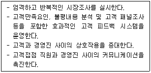
71. 소매업의 매입방식 중 규약매입에 대한 설명으로 옳은 것은?
72. 서비스 품질관리의 전략적 시사점으로 가장 옳지 않은 것은?
73. 아래 글상자의 괄호 안에 들어갈 용어를 순서대로 옳게 나열한 것은?
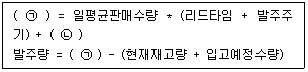
74. 재고총이익률(GMROI)을 구성하는 요인들에 대한 설명으로 옳지 않은 것은?
75. 품절을 방지하기 위한 노력으로 가장 옳지 않은 것은?
76. 사용자의 유입경로를 확인할 수 있는 온라인상의 데이터 분석 방법에 해당하는 것은?
77. 시장세분화에 활용되는 고객특성변수와 고객행동변수 중 고객행동변수와 관련된 것을 모두 나열한 것으로 옳은 것은?
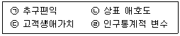
78. 재고관리에 대한 설명으로 옳지 않은 것은?
79. 단품 관리(unit control)에 대한 설명으로 옳지 않은 것은?
80. 상품믹스에 대한 설명으로 가장 옳지 않은 것은?
5과목: 유통정보
81. 마이클 포터(Michael Porter)의 가치사슬 모델에서 주활동을 지원하는 보조활동에 해당되는 것으로 가장 옳은 것은?
82. 다니엘 핑크(2012)에 의하면 개념과 감성이 강조되는 미래 정보사회에서는 하이테크 능력을 바탕으로 한 하이컨셉과 하이터치 재능을 요구하고 있는데, 이 두 가지 재능을 장려하고 개발하기 위해 갖추어야 할 조건으로 가장 옳지 않은 것은?
83. 유통 빅데이터에 대한 설명으로 가장 옳은 것은?
84. 4차 산업혁명 시대에 유통부문에서의 디지털 신기술 활용 특성으로 가장 옳지 않은 것은?
85. 아래 글상자에서 설명하는 용어로 가장 옳은 것은?
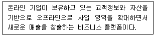
86. 아래 글상자에서 제시하고 있는 국제데이터관리협회의 데이터 품질 주요 기준 중 옳지 않은 것만을 나열한 것은?
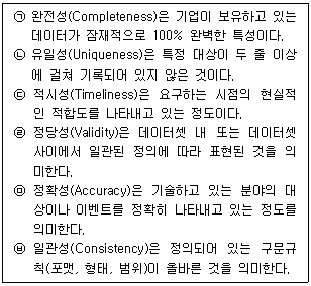
87. 고객관계관리시스템은 유통업체에서 보다 체계적인 고객마케팅을 위해서 활용하고 있다. 고객관계관리시스템과 관련된 설명으로 가장 옳지 않은 것은?
88. 오늘날 유통업체에서는 고객정보분석을 위해서 RFM 분석을 수행하고 있다. 아래 글상자에서 RFM 분석에 대한 특성을 나열한 것으로 옳은 것은?
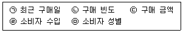
89. 아래 글상자의 괄호 안에 공통적으로 들어갈 용어로 옳은 것은?
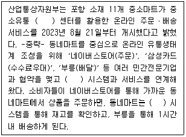
90. 최근 유통업체와 제조업체에서 사물인터넷 기술 활용이 증가하고 있다. 다음 중 사물인터넷 기술 발전단계에 대한 설명으로 가장 옳지 않은 것은?
91. 개인정보 유출을 알게 되었을 때 개인정보보호위원회또는 한국인터넷진흥원에 유출신고를 해야 한다. 이와 관련된 사항으로 가장 옳지 않은 것은?
92. 유통정보시스템의 구축을 통해 얻을 수 있는 효과로 가장 옳지 않은 것은?
93. 기존 상품에 변화가 발생한 다음 상황 중에서 상품 식별코드가 신규 부여되지 않는 경우에 해당되는 것으로 가장 옳은 것은?
94. 아래 글상자의 사례가 설명하는 용어로 가장 옳은 것은?
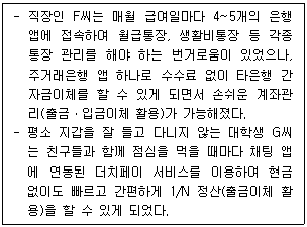
95. 아래 글상자의 사례와 관련된 현상에 대한 설명으로 가장 옳지 않은 것은?
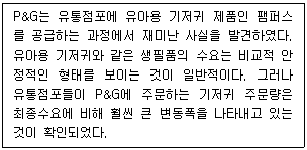
96. 아래 글상자의 괄호 안에 들어갈 용어로 가장 옳은 것은?
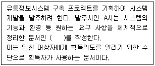
97. 아래 글상자에서 괄호 안에 들어갈 용어로 가장 옳은 것은?
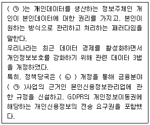
98. 최근 유통업체에서 인공지능 기술 활용이 증가하고 있다. 다음 인공지능 기술의 활용 과정을 발전 순서대로 바르게 나열한 것은?
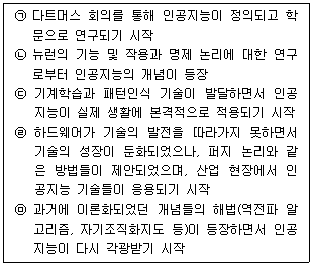
99. 아래 글상자의 사례에 사용된 ㉠에 대한 설명으로 가장 옳지 않은 것은?
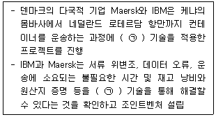
100. 아래 글상자에서 설명하는 용어로 가장 옳은 것은?
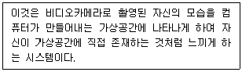